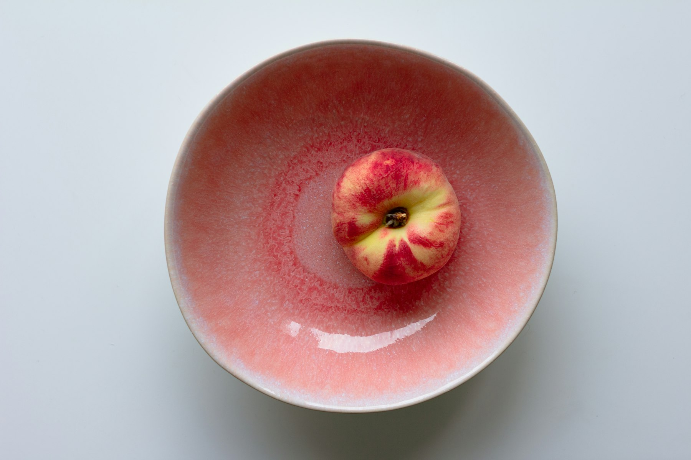

TL;DR
Successful entrepreneurs cultivate specific morning habits to boost productivity and mental clarity. By rising early, exercising, and practicing mindfulness, they set the stage for success.
Rise Early and Plan
Successful entrepreneurs often wake up early. This time allows them to start their day with a clear head. Setting aside 20-30 minutes for planning can make a significant difference. Begin your morning by jotting down your goals for the day. Focus on what tasks are most important. Consider using a planner or app to keep everything organized. This simple practice can prioritize your work and help you stay focused throughout the day.
Exercise to Boost Energy
Incorporating exercise into your morning routine can greatly benefit both your physical and mental health. Even a 20-minute workout can invigorate your mind and body. You don't need to hit the gym; a brisk walk, yoga, or home workouts are effective too. Regular exercise helps in reducing stress levels and increasing productivity. Try to find an activity you enjoy, so it feels less like a chore. Remember, consistency is key for long-lasting results.
Mindfulness and Meditation
Practicing mindfulness through meditation can prepare you mentally for the challenges of the day. Spend at least 10-15 minutes in meditation, focusing on your breath or using guided sessions. This habit helps in improving emotional intelligence and decision-making skills. Apps like Headspace or Calm can assist in this practice. Make it a routine, and you'll likely find it easier to handle stress and stay calm during busy times.

Healthy Breakfast Choices
A nutritious breakfast fuels your body and mind. Focus on foods rich in protein and healthy fats. Options like eggs, smoothies, or oatmeal can provide sustained energy. Avoid sugary cereals or pastries that may cause energy crashes. Consider meal prepping breakfast items the night before for convenience. This simple adjustment can significantly improve your concentration and mood throughout the day.
Review and Adjust Goals
Taking time to review your long-term goals each morning can keep your aspirations fresh in your mind. Set aside 10 minutes to assess what you accomplished and adjust your strategies if needed. Use this time to visualize your success and reaffirm your commitment to your goals. This practice not only keeps you aligned but also helps in maintaining motivation. Over time, you'll refine your focus and enhance your productivity.
FAQ
What are some quick exercises I can do in the morning?
You can try push-ups, sit-ups, or even a short jog around your neighborhood. Stretching or yoga can also be highly effective.
How can I make meditation easier?
Start with short sessions, like 5 minutes, and gradually increase time. Use guided apps or videos if you find it challenging to meditate on your own.
What should I avoid in my morning routine?
Try to avoid checking emails or social media first thing. Instead, focus on activities that set a positive tone for your day.
How do I stay consistent with these habits?
Set reminders and stick to a schedule. Keep a journal to track your progress and make adjustments as needed.
Photo credits
- Photo 1: Annie Spratt on Unsplash (https://unsplash.com/@anniespratt) (https://unsplash.com/photos/a-person-laying-in-bed-under-a-blanket-fzVg4I7yx3Q)
- Photo 2: Karsten Winegeart on Unsplash (https://unsplash.com/@karsten116) (https://unsplash.com/photos/man-in-black-t-shirt-and-white-shorts-walking-on-brown-wooden-floor-eGSBVVtVCCw)
- Photo 3: Birger Strahl on Unsplash (https://unsplash.com/@bist31) (https://unsplash.com/photos/green-tree-on-green-grass-field-during-daytime-XiysHjcp7rw)
- Photo 4: K8 on Unsplash (https://unsplash.com/@_k8_) (https://unsplash.com/photos/red-apple-fruit-on-white-table-fsao7BU7X8g)
- Photo 5: Ronnie Overgoor on Unsplash (https://unsplash.com/@ronnieovergoor) (https://unsplash.com/photos/black-and-silver-pen-on-gray-textile-EdKCckXXRCI)